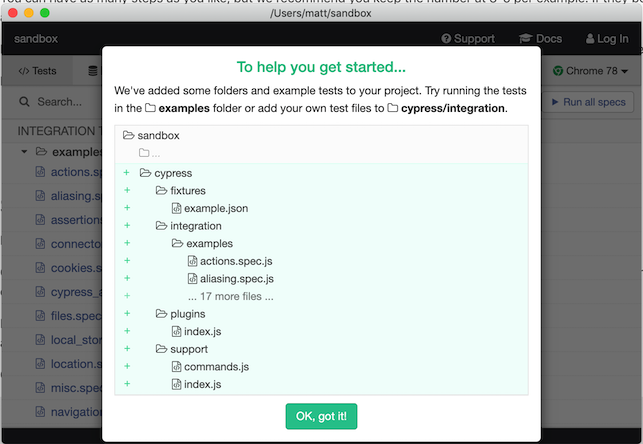

Matthew Turland
Tim Moravec
Cucumber reads executable specifications written in plain text and validates that the software does what those specifications say.Cucumber Documentation
Gherkin is a set of grammar rules that makes plain text structured enough for Cucumber to understand.Cucumber Documentation
Gherkin documents are stored in
.feature text files and are typically
versioned in source control alongside the
software.
Cucumber Documentation
The purpose of the Feature keyword is to
provide a high-level description of a software feature, and to
group related scenarios.
Gherkin Reference
Feature: Guess the word
The word guess game is a turn-based game for two players.
The Maker makes a word for the Breaker to guess. The game
is over when the Breaker guesses the Maker's word.
Scenario: Maker starts a game
When the Maker starts a game
Then the Maker waits for a Breaker to join
Scenario: Breaker joins a game
Given the Maker has started a game with the word "silky"
When the Breaker joins the Maker's game
Then the Breaker must guess a word with 5 characters... a concrete example that illustrates a business rule. It consists of a list of steps.Gherkin Reference
Scenario: Breaker guesses a word
Given the Maker has chosen a word
When the Breaker makes a guess
Then the Maker is asked to scoreEach step starts withGherkin ReferenceGiven,When,Then,And, orBut. Cucumber executes each step in a scenario one at a time, in the sequence you've written them in.
Given steps... describe the initial context of the system - the scene of the scenario... typically something that happened in the past.When steps are used to describe an event, or an action.Then steps are used to describe an expected outcome, or result.Use And or But instead of
multiple instances Given, When, or Then.
Given one thing
Given another thing
When I open my eyes
Then I should see something
Then I shouldn't see something elseGiven one thing
And another thing
When I open my eyes
Then I should see something
But I shouldn't see something elseOccasionally you’ll find yourself repeating the sameGherkin ReferenceGivensteps in all of the scenarios in a feature... ABackgroundis run before each scenario... In your feature file, put theBackgroundbefore the firstScenario.
Feature: Multiple site support
Only blog owners can post to a blog, except administrators,
who can post to all blogs.
Background:
Given a global administrator named "Greg"
And a blog named "Greg's anti-tax rants"
And a customer named "Dr. Bill"
Scenario: Dr. Bill posts to his own blog
# ...
Scenario: Dr. Bill posts to somebody else's blog, and fails
# ...Step definitions connect Gherkin steps to programming code. A step definition carries out the action that should be performed by the step.Cucumber Documentation
const { Given, When, Then } = require(`cucumber`);
Given(`I am logged in`, () => {
// ...
});
When(`I place an individual order`, () => {
// ...
});
Then(`I should see an order status screen`, () => {
// ...
});
A fast all-in-one
JavaScript end-to-end testing framework
npm install --save-dev cypress
./node_modules/.bin/cypress open
# Instead of this:
npm install --save-dev cypress
# Do this:
npm install --save-dev cypress-cucumber-preprocessor// Import like so
const {
Given,
When,
Then
} = require(`cypress-cucumber-preprocessor/steps`);Given(`I have unlimited delivery`, () => {
cy.get(`button.unlimited-banner`).click();
cy.get(`#unlimited-signup-modal`).within(() => {
cy.get(`button[class*="CheckboxButton"]`).click();
cy.get(`button[type="submit"]`).click();
});
cy.wait(1000);
cy.get(`div.modal-dialog button`).click(); // close confirmation modal
});Solution lifted from this issue comment
inputs.forEach(field => {
cy.get(`#braintree-hosted-field-${field.iframe}`).then($element => {
const $body = $element.contents().find(`body`).eq(0);
return cy.wrap($body)
.find(field.input)
.type(field.value);
});
});